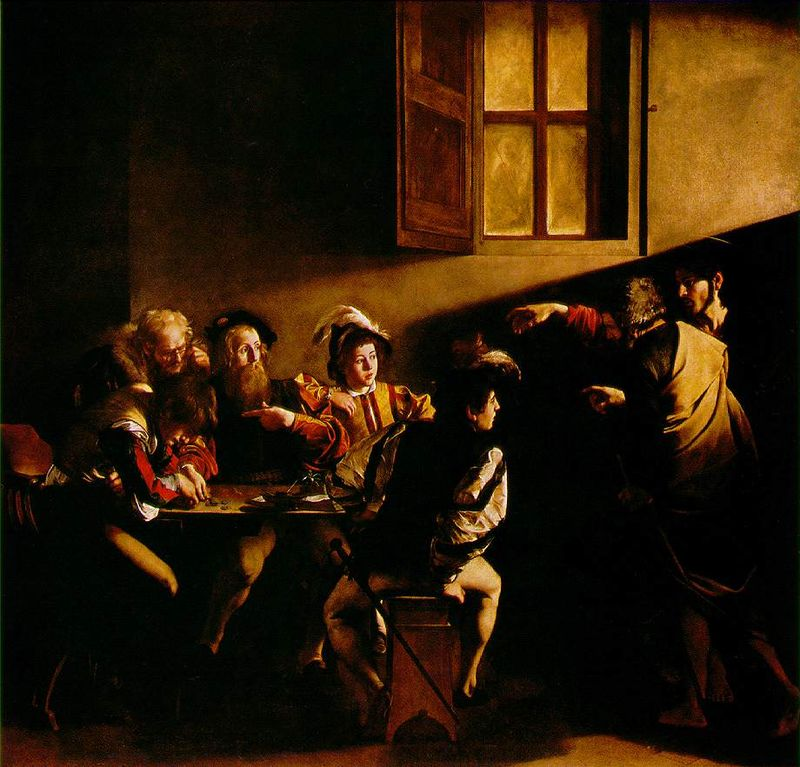
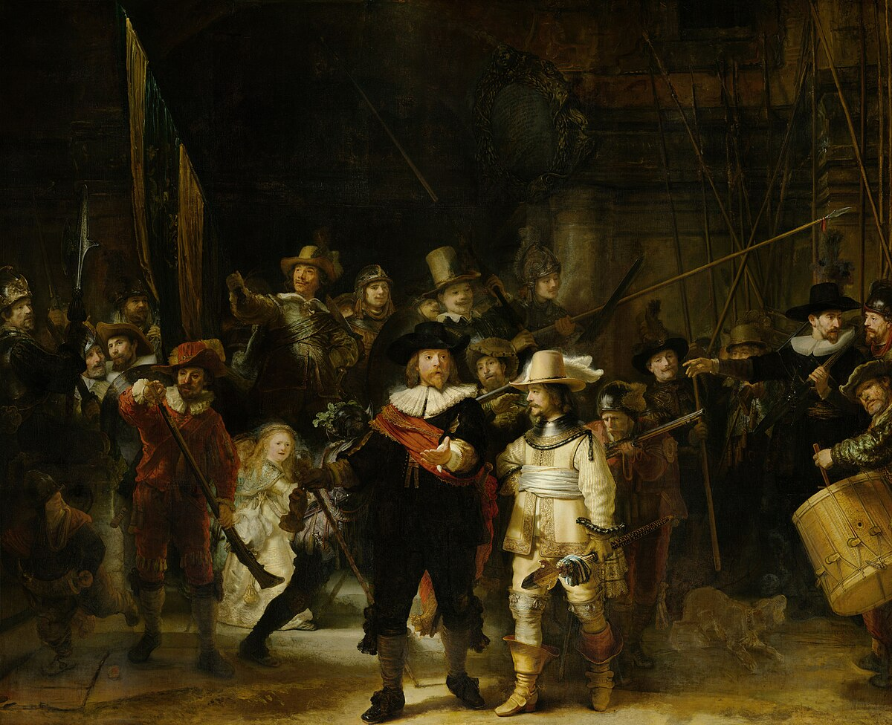
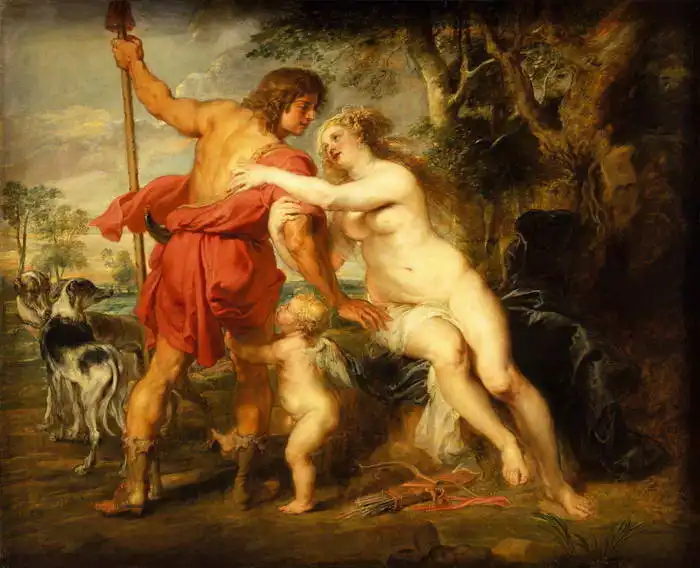
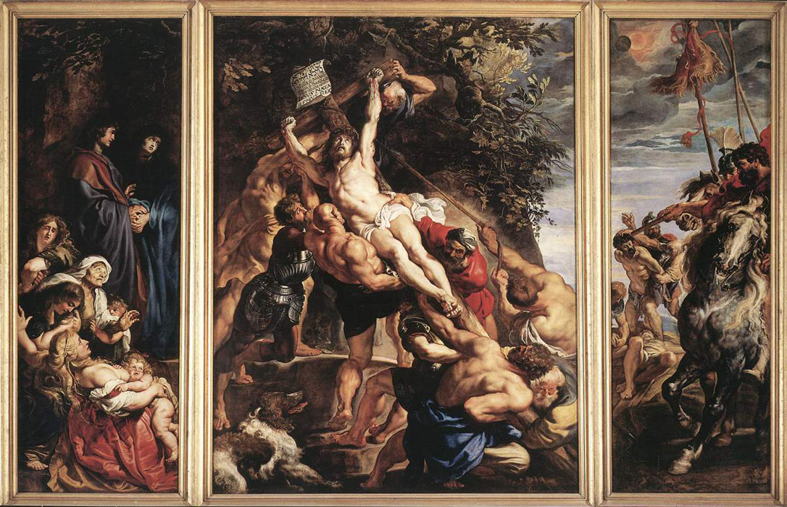

Povolání svatého Matouše od Michelangela Merisi da
Caravaggia
"Povolání svatého Matouše" od Caravaggia z roku 1600 zobrazuje
okamžik, kdy Ježíš povolává Matouše. Caravaggio využívá dramatický kontrast světla a
stínu k zvýraznění duchovního významu scény, kde Matouš, překvapený
světlem, ukazuje na sebe.

Noční hlídka od Rembrandta van Rijna
"Noční hlídka" od Rembrandta, dokončená v roce 1642, zobrazuje
amsterdamské měšťanské milicionáře vedené kapitánem Franzem Banning Cocqem. Rembrandt
mistrně využívá světlo a stín k vytvoření pohybu a dramatu, což dodává obrazu živost a
dynamiku.

Venuše a Adonis od Petera Paula Rubense
"Venuše a Adonis" od Petera Paula Rubense zobrazuje Venuši, která se
snaží zadržet Adonise před jeho osudným lovem. Rubens používá bohaté barvy a dramatické
pohyby k vyjádření intenzivních emocí mezi postavami, typické pro jeho barokní styl.

Vztyčení kříže od Petera Paula Rubense
"Vztyčení kříže" (The Elevation of the Cross) od Petera Paula
Rubense z roku 1610 je dramatický triptych, který zobrazuje vztyčování Kristova kříže.
Rubens používá dynamické kompozice, silné diagonály a živé barvy k vyjádření
intenzivního napětí a emocí. Tento obraz je mistrovským dílem barokního umění.